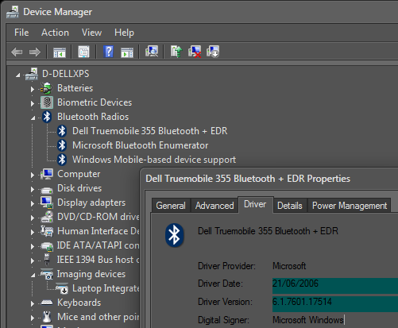
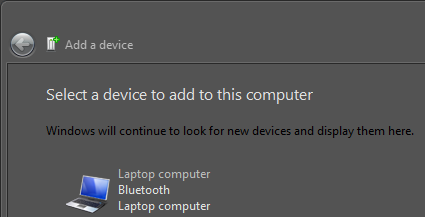
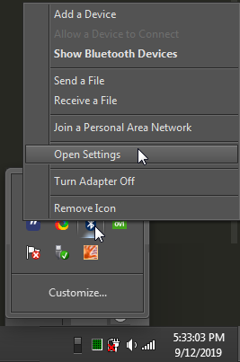
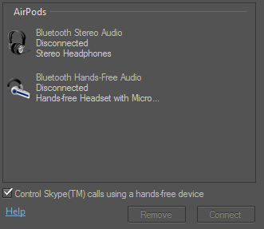

How to pair Apple AirPods (first gen) with Windows 7
This is a simple guide on how to PROPERLY pair your AirPods with your Windows 7 device and use them as a valid playback device! Written by dmack6464 (D Mack)
Step 1

If your device was manufactured before lets say.. 2016, or you have replaced the OEM's preinstalled OS, make sure your Bluetooth driver(s) are up to date.
Step 2

Go to
Control Panel\Hardware and Sound\Devices and Printers
and select "Add a device." Make sure your AirPods are in pairing mode.Step 3

Once that is done, open your Bluetooth Settings and go to the Audio tab.
Step 4

Click on either of the Bluetooth Audio devices and click on the Connect button.
For me, connecting Bluetooth Hands-Free Audio worked best.